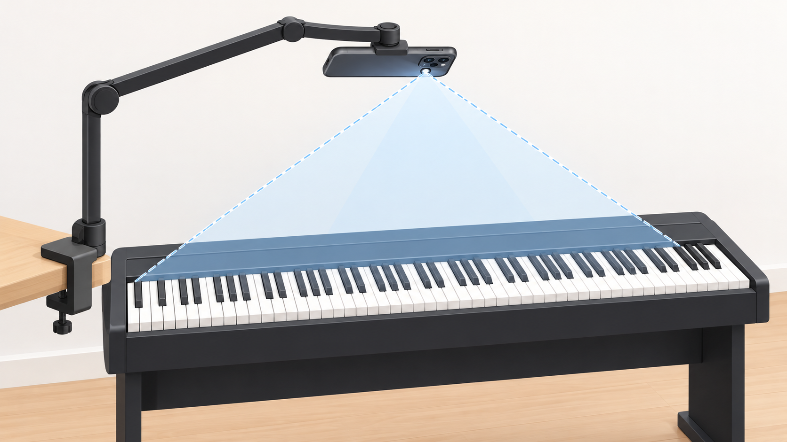
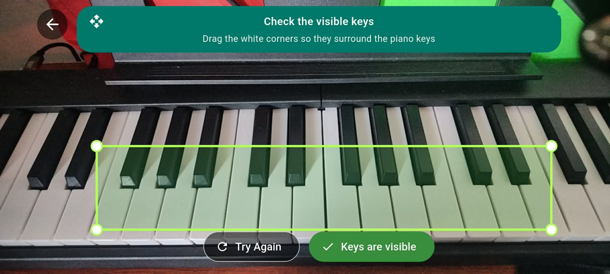
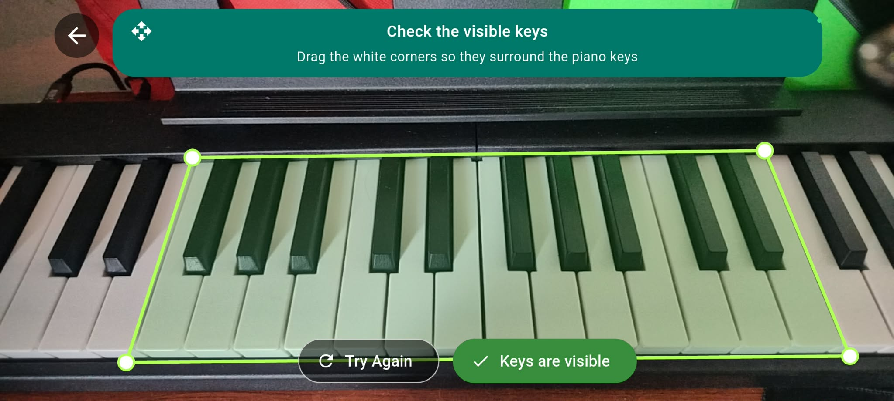
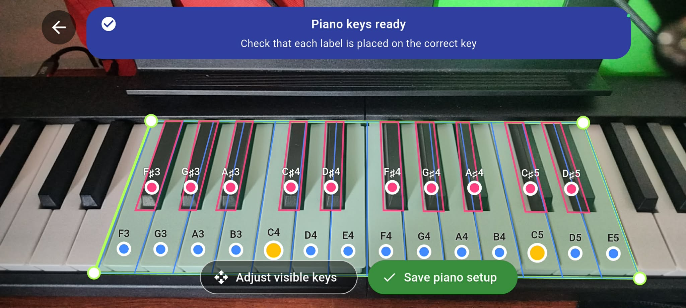
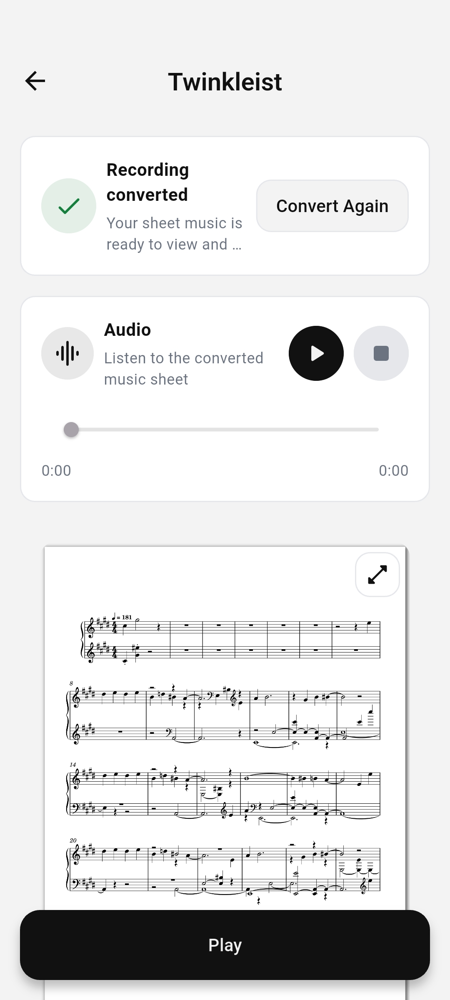
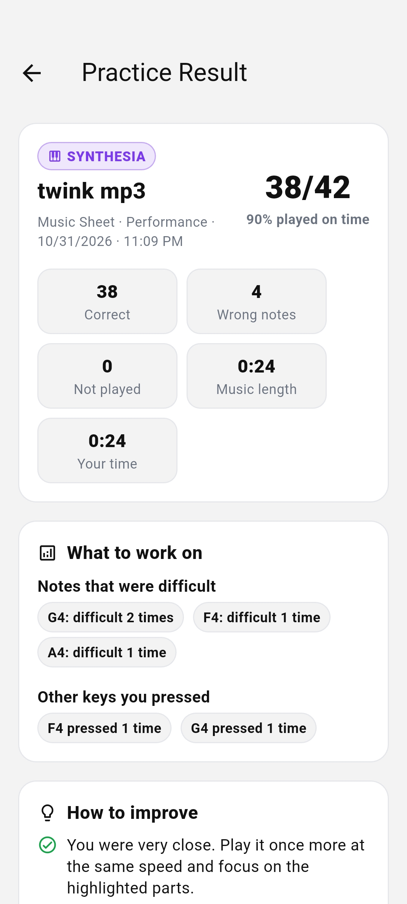
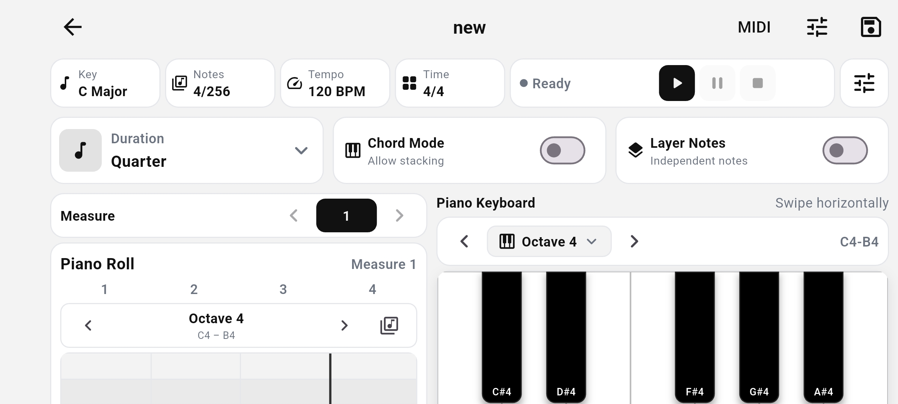

01
Learn with guided lessons
Start with a skill assessment, then work through video lessons, quizzes, and piano practice activities.
LESSONS & ASSESSMENTS
MUSIC SHEETS & PIANO
Learn to read music sheets and play piano with guided lessons, Sight Reading, Synthesia, and AR Practice.


01 / VISUAL PIANO PRACTICE
Read a score, follow falling notes, or see guidance over your real keys. Connect a compatible MIDI piano for playing feedback.
Practice reading musical notation while following the notes of your selected piece.

Use falling notes and a visual keyboard to follow the timing and sequence of a piece.
Align the camera view with your keys, connect a MIDI piano, and follow falling notes in Wait or Performance Mode.
Open a prepared piece in AR Practice, then choose New piano setup. You’ll need a phone with a rear camera, a stable holder, a compatible MIDI piano connection, and internet access to load your music and save the setup.

Keep the phone in landscape with its rear camera facing the keyboard. Use even lighting, clear hands and objects away during detection, and keep the phone fixed throughout setup and practice.

SoundSight places a green outline around the group of keys it detects. This selected group is the area you’ll calibrate.
Do not expand the outline to include every visible key.

Drag each white corner to the corresponding outer corner of the detected group. Include the full length of those keys, keep other keys outside the outline, then confirm the area.

Use the MIDI guide or select Middle C (C4) manually when prompted. Check that the key outlines and labels line up, then confirm and name your piano setup to save it.
Use your saved setup and check that it covers the notes in your piece. Connect your MIDI piano, then start Wait Mode for step-by-step practice or Performance Mode to follow the song’s timing.
These images are from SoundSight’s in-app calibration guide. Follow the prompts in your installed version; button wording may vary. Manual calibration does not replace the MIDI connection needed for practice.
02 / LEARN, ORGANIZE & CREATE
Work through lessons, turn printed music into practice material, and build your own compositions.
Start with a skill assessment, then work through video lessons, quizzes, and piano practice activities.
LESSONS & ASSESSMENTSConvert supported sheets or recordings, then preview the generated notation and open the available practice modes.
CONVERT & PRACTICE
Shown: sheet music generated from a recording.
See correct and missed notes, session timing, difficult pitches, and suggestions for your next attempt.
RESULTS & FEEDBACK
Build a composition with the on-screen keyboard or MIDI input. Adjust tempo and note duration, save your music, and share it with others.
COMPOSE & DISCOVER
03 / GETTING STARTED
Download the APK on your Android device and follow the installation steps below.
Register, verify your email, and complete the initial skill assessment to establish your starting level.
Begin a lesson or open a prepared piece in a practice mode. For AR Practice, set up the camera and connect your MIDI piano first.
SOUNDSIGHT FOR ANDROID
Get the Android app to explore lessons, visual practice, and composition tools.
Save the installation file to your Android device.
If Android asks, allow your browser or file manager to install apps from this source. Wording varies by device.
Open the downloaded file, follow Android’s prompts, and launch the app.
An Android APK, installed outside Google Play.
FREQUENTLY ASKED QUESTIONS
The current APK requires Android 7.0 or later. Feature availability also depends on your device’s hardware. AR Practice uses the camera and piano calibration. This APK cannot be installed on iPhone or iPad.
Download the file on Android, open it, and follow the installation prompts. You may need to allow installation from your browser or file manager in Android Settings. See the installation guide above. Device or organization restrictions may affect installation.
You’ll need internet access to sign in, convert music sheets or recordings, access shared music, and load or save your piano setup.
You’ll need a compatible MIDI piano connection, a phone with a rear camera, a stable phone holder, and a saved calibration that covers your piece’s notes. Keep the phone fixed after calibration. The AR setup guide above shows how to prepare the camera view.
You can browse lesson content, view your music sheets, and use the composition editor’s on-screen keyboard. MIDI input is used to receive notes from a connected piano during practice. Selecting Middle C manually only helps with camera calibration; AR practice still needs a MIDI connection.
The camera supports music-sheet capture and AR Practice. The microphone supports recording, and notifications can let you know when processing is complete. Permissions are relevant to the features you choose to use.